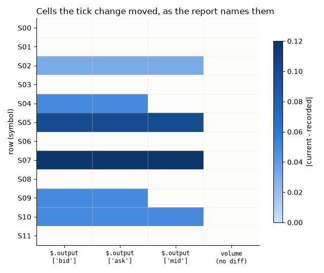

Note
Go to the end to download the full example code.
replay, compare : polars and pandas frames as arguments and results¶
Dataframes are the case that makes recording worth the trouble. Nobody wants to write assertions over a hundred columns by hand, and nobody wants a golden CSV either - it loses dtypes, and it diffs badly.
This page records functions that take and return frames, replays them, and then tours
how frames are compared. polars comes first; each section then does the same in pandas
and says where the two genuinely differ. It needs both extras,
pip install "regression-records[polars,pandas]". Without them the package imports
and records normally, and their serializers are simply not registered.
Setup: where records go¶
The code under test reads its store from the REGRESSION_RECORDS_STORE environment
variable when it is imported, so the variable is set first
(record_func : recording a first call says why).
import os
import tempfile
from pathlib import Path
# In a project: REGRESSION_RECORDS_STORE=tests/regression_data in a .env file, loaded
# with python-dotenv's load_dotenv(). Here: a fresh temporary directory, empty each run.
STORE = Path(tempfile.mkdtemp(prefix="regression-records-"))
os.environ["REGRESSION_RECORDS_STORE"] = str(STORE)
print("store:", STORE)
store: /tmp/regression-records-bycuk5_x
Setup: the code under test¶
Replay imports a recorded function by module and name, so the code under test lives in
a module, frames, imported from regression_records._examples - support code
that ships with the package so that a page can import real code rather than define it
in a cell (record_func : recording a first call says more). In
your project, this is your own package. Each part is printed where the page first uses
it.
Each function exists in a polars and a pandas version. book_data quotes a bid and
an ask around each mid price; TICK, when set, rounds every quote to that tick, the
change this page replays against later.
import inspect
Recording is off unless switched on; this page switches it on for the whole script.
show_output prints what a record holds for a function’s return value.
import json
import warnings
import pandas as pd
import polars as pl
from regression_records import (
SerializationError,
ToleranceConfig,
compare,
disable,
enable,
replay,
)
from regression_records._examples import frames
NAN = float("nan")
def show_output(recorded, keys: tuple[str, ...] = ("output",)) -> None:
"""Print ``keys`` of the first record of the ``recorded`` function."""
records = STORE.joinpath(*recorded.identity.path_parts, "records")
path = next(records.glob("rec-*.json"))
record = json.loads(path.read_text())
print(json.dumps({k: record[k] for k in keys}, indent=2))
enable()
Recording a frame¶
A frame is written as parquet - dtypes intact, compressed, content-addressed - and the
record holds a reference plus its shape. First polars, on a book that book_data
builds:
print(inspect.getsource(frames.book_data))
print(inspect.getsource(frames.polars_book))
def book_data(n: int) -> dict[str, list | np.ndarray]:
"""Return ``n`` rows of symbols, quotes and volumes as columns."""
mid, spread = np.array(MIDS[:n]), np.array(SPREADS[:n])
bid, ask = mid - spread / 2, mid + spread / 2
if TICK is not None:
bid, ask = np.round(bid / TICK) * TICK, np.round(ask / TICK) * TICK
return {
"symbol": [f"S{i:02d}" for i in range(n)],
"bid": bid,
"ask": ask,
"mid": (bid + ask) / 2,
"volume": np.arange(1, n + 1) * 100,
}
@record_func(STORE)
def polars_book(n: int) -> pl.DataFrame:
"""Return a book of ``n`` rows as a polars frame."""
return pl.DataFrame(book_data(n))
book = frames.polars_book(12)
print(book)
show_output(frames.polars_book)
shape: (12, 5)
┌────────┬────────┬────────┬────────┬────────┐
│ symbol ┆ bid ┆ ask ┆ mid ┆ volume │
│ --- ┆ --- ┆ --- ┆ --- ┆ --- │
│ str ┆ f64 ┆ f64 ┆ f64 ┆ i64 │
╞════════╪════════╪════════╪════════╪════════╡
│ S00 ┆ 101.0 ┆ 101.5 ┆ 101.25 ┆ 100 │
│ S01 ┆ 99.25 ┆ 99.75 ┆ 99.5 ┆ 200 │
│ S02 ┆ 99.78 ┆ 100.28 ┆ 100.03 ┆ 300 │
│ S03 ┆ 98.5 ┆ 99.0 ┆ 98.75 ┆ 400 │
│ S04 ┆ 101.8 ┆ 102.2 ┆ 102.0 ┆ 500 │
│ … ┆ … ┆ … ┆ … ┆ … │
│ S07 ┆ 100.87 ┆ 101.37 ┆ 101.12 ┆ 800 │
│ S08 ┆ 99.5 ┆ 100.0 ┆ 99.75 ┆ 900 │
│ S09 ┆ 100.2 ┆ 100.8 ┆ 100.5 ┆ 1000 │
│ S10 ┆ 97.95 ┆ 98.45 ┆ 98.2 ┆ 1100 │
│ S11 ┆ 102.75 ┆ 103.25 ┆ 103.0 ┆ 1200 │
└────────┴────────┴────────┴────────┴────────┘
{
"output": {
"__type__": "polars.DataFrame",
"path": "../data/df-e0ef652b08dd174188132a0b321f1eeb.parquet",
"shape": [
12,
5
]
}
}
A frame argument is recorded the same way, as a parquet side file the replay loads back and passes in.
print(inspect.getsource(frames.polars_notional))
print(frames.polars_notional(book, fx=1.25))
@record_func(STORE)
def polars_notional(book: pl.DataFrame, fx: float) -> pl.DataFrame:
"""Return ``book`` with a ``notional`` column, in the currency ``fx`` converts to."""
return book.with_columns(notional=pl.col("mid") * pl.col("volume") * fx)
shape: (12, 6)
┌────────┬────────┬────────┬────────┬────────┬───────────┐
│ symbol ┆ bid ┆ ask ┆ mid ┆ volume ┆ notional │
│ --- ┆ --- ┆ --- ┆ --- ┆ --- ┆ --- │
│ str ┆ f64 ┆ f64 ┆ f64 ┆ i64 ┆ f64 │
╞════════╪════════╪════════╪════════╪════════╪═══════════╡
│ S00 ┆ 101.0 ┆ 101.5 ┆ 101.25 ┆ 100 ┆ 12656.25 │
│ S01 ┆ 99.25 ┆ 99.75 ┆ 99.5 ┆ 200 ┆ 24875.0 │
│ S02 ┆ 99.78 ┆ 100.28 ┆ 100.03 ┆ 300 ┆ 37511.25 │
│ S03 ┆ 98.5 ┆ 99.0 ┆ 98.75 ┆ 400 ┆ 49375.0 │
│ S04 ┆ 101.8 ┆ 102.2 ┆ 102.0 ┆ 500 ┆ 63750.0 │
│ … ┆ … ┆ … ┆ … ┆ … ┆ … │
│ S07 ┆ 100.87 ┆ 101.37 ┆ 101.12 ┆ 800 ┆ 101120.0 │
│ S08 ┆ 99.5 ┆ 100.0 ┆ 99.75 ┆ 900 ┆ 112218.75 │
│ S09 ┆ 100.2 ┆ 100.8 ┆ 100.5 ┆ 1000 ┆ 125625.0 │
│ S10 ┆ 97.95 ┆ 98.45 ┆ 98.2 ┆ 1100 ┆ 135025.0 │
│ S11 ┆ 102.75 ┆ 103.25 ┆ 103.0 ┆ 1200 ┆ 154500.0 │
└────────┴────────┴────────┴────────┴────────┴───────────┘
and pandas, which is the same on disk apart from the file’s prefix. The index is part of a pandas frame, so it is part of the parquet file too.
print(inspect.getsource(frames.pandas_book))
print(inspect.getsource(frames.pandas_notional))
@record_func(STORE)
def pandas_book(n: int) -> pd.DataFrame:
"""Return a book of ``n`` rows as a pandas frame indexed by symbol."""
return pd.DataFrame(book_data(n)).set_index("symbol")
@record_func(STORE)
def pandas_notional(book: pd.DataFrame, fx: float) -> pd.DataFrame:
"""Return ``book`` with a ``notional`` column, in the currency ``fx`` converts to."""
return book.assign(notional=book["mid"] * book["volume"] * fx)
pandas_book = frames.pandas_book(12)
print(pandas_book)
frames.pandas_notional(pandas_book, fx=1.25)
show_output(frames.pandas_book)
bid ask mid volume
symbol
S00 101.00 101.50 101.25 100
S01 99.25 99.75 99.50 200
S02 99.78 100.28 100.03 300
S03 98.50 99.00 98.75 400
S04 101.80 102.20 102.00 500
S05 100.15 100.65 100.40 600
S06 97.25 97.75 97.50 700
S07 100.87 101.37 101.12 800
S08 99.50 100.00 99.75 900
S09 100.20 100.80 100.50 1000
S10 97.95 98.45 98.20 1100
S11 102.75 103.25 103.00 1200
{
"output": {
"__type__": "pandas.DataFrame",
"format": "parquet",
"path": "../data/pddf-e14dd11e0c71c96959357c4082b853ff.parquet",
"shape": [
12,
4
]
}
}
Series¶
A Series records as a one-column parquet file that keeps its name, and compares like a
column: name and dtype, then length (in pandas, the index), then values. An unnamed
polars series is named ""; an unnamed pandas one has no name at all, which parquet
cannot represent, so the record carries it separately.
print(inspect.getsource(frames.polars_returns))
print(inspect.getsource(frames.pandas_rolling))
@record_func(STORE)
def polars_returns(prices: pl.Series) -> pl.Series:
"""Return the simple period returns of ``prices``, named ``"return"``."""
return prices.pct_change().alias("return")
@record_func(STORE)
def pandas_rolling(values: list[float]) -> pd.Series:
"""Return the two-day rolling mean of ``values``, indexed by calendar day."""
series = pd.Series(values, index=pd.date_range("2024-01-01", periods=len(values)))
return series.rolling(2).mean()
print(frames.polars_returns(pl.Series("price", [100.0, 101.0, 99.0])))
print(frames.pandas_rolling([1.0, 2.0, 3.0, 4.0]))
show_output(frames.polars_returns, keys=("invocation", "output"))
shape: (3,)
Series: 'return' [f64]
[
null
0.01
-0.019802
]
2024-01-01 NaN
2024-01-02 1.5
2024-01-03 2.5
2024-01-04 3.5
Freq: D, dtype: float64
{
"invocation": {
"args": [
{
"__type__": "polars.Series",
"dtype": "Float64",
"length": 3,
"name": "price",
"path": "../data/series-88d4728c95a96838e44b4af07115876d.parquet"
}
],
"kwargs": {}
},
"output": {
"__type__": "polars.Series",
"dtype": "Float64",
"length": 3,
"name": "return",
"path": "../data/series-43fa02d988ee3b2c7cc028e4b9dcf07f.parquet"
}
}
Replaying them¶
Every record replays: the frame and series arguments load back from parquet, the functions run on them, and the results compare equal to the recorded ones.
clean = replay(STORE)
for case in clean.cases:
print(f" {case.status.value:<8} {case.name}")
assert clean.passed, clean.summary()
assert len(clean.cases) == 6
passed regression_records._examples.frames:pandas_book
passed regression_records._examples.frames:pandas_notional
passed regression_records._examples.frames:pandas_rolling
passed regression_records._examples.frames:polars_book
passed regression_records._examples.frames:polars_notional
passed regression_records._examples.frames:polars_returns
Column-level diffs¶
Now the change: quotes rounded to a quarter tick. Recording goes off first, so that
calling the changed code below, to plot it, records nothing new. With TICK set,
the two book functions differ on replay, and a dataframe comparison reports per
column, using the ['name'] step in the path grammar, and names the rows that differ
rather than printing two frames at you. volume and symbol did not change, so
they are not mentioned.
disable()
frames.TICK = 0.25
try:
current = frames.polars_book(12)
report = replay(STORE)
finally:
frames.TICK = None
for case in report.cases:
print(f" {case.status.value:<8} {case.name}")
for case in report.failures:
print(f"\n{case.name}:")
print(case.comparison.summary())
assert sorted(c.name for c in report.failures) == [
f"{frames.__name__}:pandas_book",
f"{frames.__name__}:polars_book",
]
differs regression_records._examples.frames:pandas_book
passed regression_records._examples.frames:pandas_notional
passed regression_records._examples.frames:pandas_rolling
differs regression_records._examples.frames:polars_book
passed regression_records._examples.frames:polars_notional
passed regression_records._examples.frames:polars_returns
regression_records._examples.frames:pandas_book:
comparison failed with 3 diff(s):
at "$.output['bid']" (value_mismatch): 6 of 12 element(s) differ beyond tolerance at index/indices: 2, 4, 5, 7, 9, 10
at "$.output['ask']" (value_mismatch): 6 of 12 element(s) differ beyond tolerance at index/indices: 2, 4, 5, 7, 9, 10
at "$.output['mid']" (value_mismatch): 4 of 12 element(s) differ beyond tolerance at index/indices: 2, 5, 7, 10
regression_records._examples.frames:polars_book:
comparison failed with 3 diff(s):
at "$.output['bid']" (value_mismatch): 6 of 12 element(s) differ beyond tolerance at index/indices: 2, 4, 5, 7, 9, 10
at "$.output['ask']" (value_mismatch): 6 of 12 element(s) differ beyond tolerance at index/indices: 2, 4, 5, 7, 9, 10
at "$.output['mid']" (value_mismatch): 4 of 12 element(s) differ beyond tolerance at index/indices: 2, 5, 7, 10
Which cells moved¶
The report names columns and rows; laid out as the frame, that is a map of the cells
the change touched. Rows whose quotes were already on the tick did not move, the
mid of a row whose bid and ask moved in opposite directions did not either, and
volume never moved at all - each exactly as the report says.
import re
import matplotlib.pyplot as plt
import numpy as np
from matplotlib.colors import LinearSegmentedColormap
polars_case = next(
c for c in report.failures if c.name == f"{frames.__name__}:polars_book"
)
named = {
d.path: [int(i) for i in re.findall(r"\d+", d.message.split(":")[-1])]
for d in polars_case.comparison.diffs
}
columns = ["bid", "ask", "mid", "volume"]
change = np.column_stack(
[np.abs(current[c].to_numpy() - book[c].to_numpy()) for c in columns]
).astype(float)
touched = ~np.isclose(change, 0.0, rtol=0.0, atol=1e-12)
# The figure marks exactly the cells the report names, column by column.
for j, column in enumerate(columns):
path = f"$.output['{column}']"
assert np.flatnonzero(touched[:, j]).tolist() == named.get(path, []), column
assert set(named) == {"$.output['bid']", "$.output['ask']", "$.output['mid']"}
blues = LinearSegmentedColormap.from_list("blues", ["#cde2fb", "#2a78d6", "#0d366b"])
blues.set_bad("#fcfcfb")
fig, ax = plt.subplots(figsize=(6.4, 5.4))
image = ax.imshow(
np.ma.masked_where(~touched, change), cmap=blues, vmin=0, aspect="auto"
)
ax.set_xticks(
range(len(columns)),
[
f"$.output\n['{c}']" if f"$.output['{c}']" in named else f"{c}\n(no diff)"
for c in columns
],
family="monospace",
fontsize=8.5,
)
ax.set_yticks(range(book.height), book["symbol"].to_list())
ax.set_xticks(np.arange(-0.5, len(columns)), minor=True)
ax.set_yticks(np.arange(-0.5, book.height), minor=True)
ax.grid(False)
ax.grid(which="minor", color="#e1e0d9", lw=1)
ax.tick_params(which="minor", length=0)
ax.set_ylabel("row (symbol)")
ax.set_title("Cells the tick change moved, as the report names them", loc="left")
fig.colorbar(image, ax=ax, label="|current - recorded|", shrink=0.8)
fig.tight_layout()

The notional functions still pass: they replay on their recorded book, not on a
freshly generated one, so a change upstream of a function’s arguments is invisible to
its own records. Record at each stage of a pipeline you want pinned.
assert report.counts()["passed"] == 4
Schema first¶
A schema difference short-circuits the value comparison. Once the columns or their dtypes have changed, per-row differences are noise - the frame is a different frame, and reporting a thousand “row differs” lines would bury the one fact that matters.
polars:
comparison failed with 1 diff(s):
at '$' (schema_mismatch): schema mismatch: missing column(s) ['b']; unexpected column(s) ['c']; dtype change(s) ['a: Int64 -> Float64']
pandas:
comparison failed with 1 diff(s):
at '$' (schema_mismatch): schema mismatch: missing column(s) ['b']; unexpected column(s) ['c']; dtype change(s) ['a: int64 -> float64']
Column order is part of the schema, in both libraries, and strict_dtype=False does
not relax it: that setting is about dtypes, and a frame whose columns moved is a
different frame to anything that reads it by position.
for frame in (pl.DataFrame, pd.DataFrame):
result = compare(
frame({"x": [1], "y": [2]}),
frame({"y": [2], "x": [1]}),
ToleranceConfig(strict_dtype=False),
)
print(f"{frame.__module__.split('.')[0]}: {result.diffs[0].message}")
polars: schema mismatch: column order differs
pandas: schema mismatch: column order differs
Tolerance on one column¶
path_overrides keys use the same paths the diffs report, so a column that legitimately
drifts can be loosened while its neighbours stay strict. Identically for both.
expected = {"price": [10.0, 20.0], "qty": [1.0, 2.0]}
actual = {"price": [10.02, 20.03], "qty": [1.0, 2.000001]}
loose_on_price = ToleranceConfig(
rtol=1e-7, path_overrides={"$.output['price']": ToleranceConfig(rtol=1e-2)}
)
for frame in (pl.DataFrame, pd.DataFrame):
strict = compare(frame(expected), frame(actual), root="$.output")
loose = compare(frame(expected), frame(actual), loose_on_price, root="$.output")
print(f"\n{frame.__module__.split('.')[0]}, strict everywhere:")
print(strict.summary())
print("loose on price only:")
print(loose.summary())
assert {d.path for d in strict.diffs} == {"$.output['price']", "$.output['qty']"}
assert [d.path for d in loose.diffs] == ["$.output['qty']"]
polars, strict everywhere:
comparison failed with 2 diff(s):
at "$.output['price']" (value_mismatch): 2 of 2 element(s) differ beyond tolerance at index/indices: 0, 1
at "$.output['qty']" (value_mismatch): 1 of 2 element(s) differ beyond tolerance at index/indices: 1
loose on price only:
comparison failed with 1 diff(s):
at "$.output['qty']" (value_mismatch): 1 of 2 element(s) differ beyond tolerance at index/indices: 1
pandas, strict everywhere:
comparison failed with 2 diff(s):
at "$.output['price']" (value_mismatch): 2 of 2 element(s) differ beyond tolerance at index/indices: 0, 1
at "$.output['qty']" (value_mismatch): 1 of 2 element(s) differ beyond tolerance at index/indices: 1
loose on price only:
comparison failed with 1 diff(s):
at "$.output['qty']" (value_mismatch): 1 of 2 element(s) differ beyond tolerance at index/indices: 1
Missing values¶
Here the libraries genuinely differ. polars has two things where pandas has one: a
null is a missing value and a NaN is a floating-point number. A column that
changes from one to the other has changed - mean() skips a null and is poisoned by
a NaN - so it is reported, whatever equal_nan says.
null_vs_nan = compare(pl.DataFrame({"x": [1.0, None]}), pl.DataFrame({"x": [1.0, NAN]}))
print(null_vs_nan.summary())
assert not null_vs_nan.passed
comparison failed with 1 diff(s):
at "$['x']" (value_mismatch): 1 of 2 value(s) are null on one side only at row(s): 1
equal_nan governs NaN against NaN, and nulls in the same place are always equal.
Where each side is null is compared first, and the other rows in the column’s own
dtype - so an integer column with a null in it is still compared as integers, and
identifiers too large for a float are told apart.
nan_frame = pl.DataFrame({"x": [1.0, NAN, None]})
assert compare(nan_frame, nan_frame.clone()).passed, "NaN equals NaN by default"
assert not compare(
nan_frame, nan_frame.clone(), ToleranceConfig(equal_nan=False)
).passed
print(
"2**60 + 1 vs 2**60: ",
compare(
pl.DataFrame({"id": [2**60 + 1, None]}), pl.DataFrame({"id": [2**60, None]})
).passed,
)
2**60 + 1 vs 2**60: False
A pandas float column has only NaN, so None and NaN are the same value by the
time there is a frame to compare, and equal_nan decides whether two of them match:
pandas_missing = pd.DataFrame({"x": [1.0, None]})
assert compare(pandas_missing, pd.DataFrame({"x": [1.0, NAN]})).passed, "None vs NaN"
Nested columns¶
polars columns can hold lists, arrays and structs. Tolerance reaches inside them: list lengths must match row by row, float and integer leaves compare within the column’s tolerance, and every other leaf exactly. Differences are reported by row.
curves = pl.DataFrame(
{
"tenors": [[0.5, 1.0, 2.0], [1.0]],
"quote": [{"mid": 101.25, "source": "A"}, {"mid": 99.5, "source": "B"}],
}
)
noise = curves.with_columns(pl.col("tenors").list.eval(pl.element() + 1e-13))
assert compare(curves, noise).passed, "float noise inside a list is within tolerance"
moved = curves.with_columns(
pl.col("quote").struct.with_fields(pl.field("mid") + pl.Series([0.0, 0.25]))
)
nested = compare(curves, moved)
print(nested.summary())
assert not nested.passed
comparison failed with 1 diff(s):
at "$['quote']" (value_mismatch): 1 of 2 nested value(s) differ beyond tolerance at row(s): 1
Wide frames¶
Reporting is capped: once enough columns have differed, the rest are replaced by a single summary line. A frame where every column shifted should say so once, not once per column.
for frame in (pl.DataFrame, pd.DataFrame):
result = compare(
frame({f"c{i}": [0.0] for i in range(40)}),
frame({f"c{i}": [1.0] for i in range(40)}),
)
print(f"{len(result.diffs)} diff(s) for 40 differing columns")
print(result.diffs[-1].message)
21 diff(s) for 40 differing columns
column 'c20' also differs, and the 19 column(s) after it were not compared; reporting stopped after 20 differing columns
21 diff(s) for 40 differing columns
column 'c20' also differs, and the 19 column(s) after it were not compared; reporting stopped after 20 differing columns
What is refused¶
Each of these raises SerializationError when recording, rather than writing a
record that lost something or could never be read back.
A polars
LazyFrameis not auto-collected. Collection can be expensive or side-effecting, so calling.collect()stays your decision, made where you can see the cost.A polars
Objectcolumn is the one polars dtype parquet cannot hold.A pandas
objectcolumn of mixed types is something Arrow cannot represent.
from regression_records.serialization import (
SerializationContext,
default_registry,
to_json_tree,
)
awkward = pd.DataFrame({"mixed": [1, "two", {"three": 3}]})
refused = {
"polars LazyFrame": pl.LazyFrame({"a": [1]}),
"polars Object column": pl.DataFrame(
{"payload": pl.Series([object()], dtype=pl.Object)}
),
"pandas mixed column": awkward,
}
ctx = SerializationContext(data_dir=Path(tempfile.mkdtemp()), registry=default_registry)
for label, value in refused.items():
try:
to_json_tree(value, ctx)
except SerializationError as e:
print(f"{label}: {str(e)[:100]}...")
else:
raise AssertionError(f"{label} was recorded")
polars LazyFrame: polars.LazyFrame cannot be persisted as a regression record; call `.collect()` to materialize a Data...
polars Object column: polars column(s) ['payload'] have dtype Object, which parquet cannot hold. Cast them to a polars dty...
pandas mixed column: cannot store this pandas object as parquet (ArrowInvalid("Could not convert 'two' with type str: tri...
Opting in to pickle¶
pandas, and only pandas, has a way out. Unpickling runs code, and a store is committed
and shared, so a pickle is never written or read unless you asked for that: build
the pandas serializers with allow_pickle=True and swap them into a copy of the
default registry. The fallback then applies to that one file, with a warning,
because a pickled record is less portable and not inspectable. polars has no such
option: every dtype but Object has a parquet form, so there is always a cast that
makes the frame recordable.
from regression_records.serialization.pandas_serializer import (
PandasDataFrameSerializer,
)
pickling = default_registry.copy()
pickling.register(PandasDataFrameSerializer(allow_pickle=True), replace=True)
ctx = SerializationContext(data_dir=Path(tempfile.mkdtemp()), registry=pickling)
with warnings.catch_warnings(record=True) as caught:
warnings.simplefilter("always")
tree = to_json_tree(awkward, ctx)
print("stored as:", tree["format"])
assert tree["format"] == "pickle"
for w in caught:
print(f"{w.category.__name__}: {str(w.message)[:110]}...")
stored as: pickle
UserWarning: failed to store pandas object as parquet (ArrowInvalid("Could not convert 'two' with type str: tried to conver...
Three things to know about frames on disk¶
Parquet is content-addressed, so a frame recorded identically by ten different functions is one file per identity directory - and re-recording an unchanged frame writes nothing.
A frame argument’s input hash comes from its parquet bytes. Those are stable from run to run, but not across every polars or pyarrow release. Replay never looks a record up by that hash - it loads the recorded frame and calls the function on it - so an encoding change does not stop old records replaying. It only means a new recording of the same call is filed beside the old one rather than with it.
DatetimeIndex.freqdoes not survive parquet. An index round-trips with its values and dtype but not its inferred frequency. Iffreqis part of what you are testing, assert on it separately.
print("parquet files:", sorted(p.name for p in STORE.rglob("*.parquet")))
parquet files: ['df-51b55a81a6d45ce82b9680d3f3af0732.parquet', 'df-e0ef652b08dd174188132a0b321f1eeb.parquet', 'df-e0ef652b08dd174188132a0b321f1eeb.parquet', 'pddf-09069fa006d44ded29f5f6ac1d50eb44.parquet', 'pddf-e14dd11e0c71c96959357c4082b853ff.parquet', 'pddf-e14dd11e0c71c96959357c4082b853ff.parquet', 'pdseries-73a80986d083e8a06bed5f13e4b0c59c.parquet', 'series-43fa02d988ee3b2c7cc028e4b9dcf07f.parquet', 'series-88d4728c95a96838e44b4af07115876d.parquet']
Next: RecordStore : inspecting records on disk - what a store looks like on disk, and how to read it from Python.
Total running time of the script: (0 minutes 0.345 seconds)